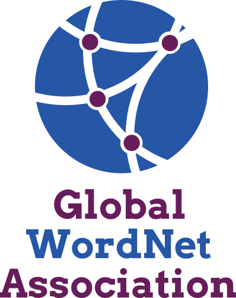

Global Wordnet Association Proposal for Google Season of Docs

The Global WordNet Association (GWA) is a free, public and
non-commercial organization that provides a platform for discussing,
sharing and connecting semantic lexicons (wordnets) for all languages
in the world. Our goal is to make compatible, linked, open lexical
resources useful for both humans and computers. Here is a link to
wordnet in the Open Multilingual Wordnet (OMW).
The English Wordnet is extremely widely used, and so is the
multilingual data from the OMW 1.0, which is distributed with the
Python Natural Language Toolkit, used by Google Translate, Babelnet
and many more. The documentation we are building here is aiming at
the new version (OMW 2.0) which makes the semantic network less
biased towards English. We have high quality contributions for
over 40 languages (not all on the website yet).
We are eager to welcome tech writing collaborators through the
Google Season of Docs program to help us with our documentation
needs! GWA is a loose collaboration of many projects. We have
selected a couple for this proposal, and the application has been
blessed by the GWA board (five members of which are involved in the proposal).

Ideas we invite tech writers to work with us on:
These tasks should all start with a documentation audit, to
see what we do and don't have already.
If you are interested to know more about these project ideas,
please email the mentors of each project, and we'll reply as soon as we can.
Detailed Descriptions:
The goal is to make sure all the data-types (semantic relations,
parts-of-speech, verb patterns, ...) are properly documented. The
goal is that both dictionary users and dictionary developers can
access this easily, and we have a procedure for adding more
documentation as needed.
Description
We have started to make a central repository of
documentation for,e.g., semantic relations: gwadoc,
but it needs a lot of work. We are trying to keep UX strings together with the documentation,
to make it easier to keep them in sync.
The goal is to have the documentation dynamically produced with the
lexicons, so that we know we always have the same set of relations,
and we can pull in examples directly from the database.
We have also started adding more documentation to the development
branch of our new OMW interface, but it has not been
deployed yet.
Related Material
Link to the open source project that needs documentation.
new OMW interface.
We have started with documentation for the core semantic relations,
such as hypernym.
The documentation needs to be fleshed
out more, with descriptions meanings for tests, examples and more.
Currently our documentation is both incomplete, inconsistent and
overly technical when it exists. It would also be good to have more
links to the original documentation.
Documentation on relations is spread over many sources, from the
original man
pages,
to project
reports, books
and papers.
We often add new information (like additional semantic relations),
so it would be good to have a template for adding new relations.
Finally (or perhaps initially), it would be good to have a
documentation audit to see what information is missing.
Desired Skills
- Ability to read, write, and organize technical documentation
- Fluent written and verbal communication skills in English
- Some knowledge of linguistics
- Good independent research and exploration skills
- Familiarity with Git and HTML
Nice to have:
Mentors
Ewa Rudnicka, German Rigau, Francis Bond

The OMW is relatively complicated, and it would be good to have a
couple of user guides.
Description
The Open Multilingual Wordnet provides access to open wordnets in a
variety of languages, all linked to a collaborative Interlingual
Index. The goal is to make it easy to use wordnets in multiple
languages. The individual wordnets have been made by many different
projects and vary greatly in size and accuracy. We have defined a
common interchange format (GWA-LMF: Lexical markup framework) and a
website where
people can upload and make new wordnets accessible. The Open
Multilingual Wordnet and its components are open: they can be freely
used, modified, and shared by anyone for any purpose.
The wordnets are all developed independently, although
all based on the original Princeton Wordnet of English. They are
also typically made in projects with finite funding windows, and not
much money for maintenance. Because of this, documentation is
spread all over the world: as technical reports, academic papers,
theses and more.
Related Material
Link to the open source project that needs documentation.
Open
Multilingual Wordnet Version 2.0
Documentation Goals
A guide for someone contributing a new wordnet (or family of wordnets)
- How to make a well formatted wordnet
- How to upload it
How to make sense of the feedback
Existing Documentation
A guide for someone searching the wordnet (or family of wordnets)
- How to read the returned pages
Synset, Sense, Summary, ...
- How to download
- How to provide feedback
No Existing Documentation (we hope it is sort of intuitive, but
suspect it may not be to outsiders)
A guide for interacting with the InterLingual Index
- Why and how to deprecate and supersede concepts
- Judging new candidates
Some documentation in the developer branch on github.
Mentors
Francis Bond, Alexandre Rademaker
Skills
- Fluent written and verbal communication skills in English
- Ability to read, write, and organize technical documentation and user stories
- Some knowledge of linguistics
- Good independent research and exploration skills
Nice to have:

The goal is to let contributors know how to add new information
(words, senses and synsets). It would be good to have (i) a general
guide and (ii) a guide specific to the English wordnet.
Background
We have a very rough guide at NTU:
http://compling.hss.ntu.edu.sg/ntumc/tagdoc.html
The Polish wordnet project and Eurowordnet also have extensive
documentation, maybe not in English.
Needs
An illustrated step-by-step guides for
- Adding a word to an existing synset
- Adding a new concept
- Deciding what should go into the wordnet and what stay out
- Good form for definitions and examples
There will be a need for language specific extenstions, but we want
to start by targeting English, specifically
the English Wordnet.
Current Documentation
Mentors
John McCrae, Francis Bond
Skills
- Fluent written and verbal communication skills in English
- Ability to read, write, and organize technical documentation and user stories
- Some knowledge of linguistics
- Good independent research and exploration skills
- Experience with git
Nice to have:
- Familiarity with lexicography
Acknowledgments
Proposal format very much inspired
by Kolabri's
from 2019, thanks to the GWA board for discussion, and the
GSoDoc organisers for the chats.
✉
Francis Bond and Alexandre Rademaker (Organization administrators)
GWA
Documentation Working Group
Global Wordnet Association